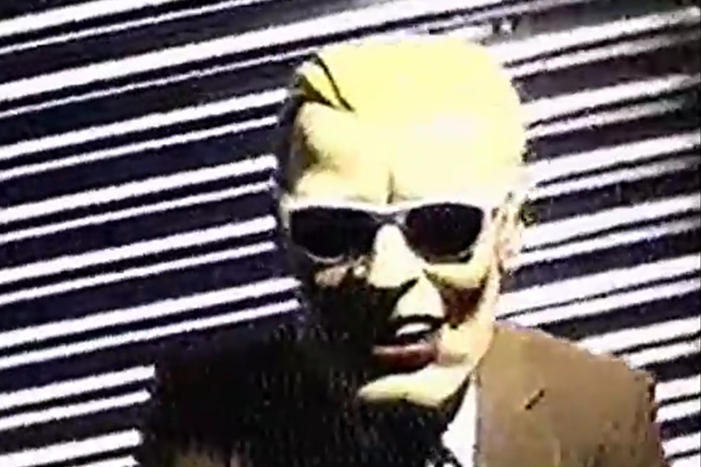
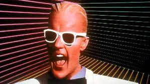

The Max Headroom Hijackings occured on November 22nd, 1987 in Chicago, Illinois. To this day, nobody knows who the culprit was that took over 2 different local TV stations. There were two separate incidents of take overs about 2 hours apart.

The man in the hijackings most notable feature is the mask he's wearing of Max Headroom, but who is that? Well, Max Headroom is a fictional character that was created in 1985 as the first "computer generated TV personality", although in reality it was just a man wearing a costume and heavy prosthetics to give an uncanny valley appearance. In his show titled The Max Headroom Show, it would normally start with Max appearing to hijack the broadcast to show music videos. While the character had a brief reappearance in 2007 and a cameo in Pixels, he has widely been forgotten since then. It's arguable that more people of today know Max Headroom for the signal hijackings rather than the character itself.
The first hijacking took place on a news station called WGN-TV that was covering the football game against the Lions and the Bears at apporximately 9:14 pm. The hijack was pretty bland in comparison to the second one, as it didn't have much audio accompanying it aside from a garbled, static buzz. Viewers at the time had the channel signal go black for about 15 seconds before cutting to the man in the Max Headroom mask with a rotating, corrugated steel background. The signal interuption only lasted about 20 seconds before engineers at WGN-TV for able to switch the frequency of the signal, which led to much confusion between viewers and staff alike, with the anchor on air admitting that he also had no idea what just happened.
The second incident took place around 11:20 pm, except this time it was on the channel WTTV. The channel was in the middle of airing an episode of Doctor Who when the hijacker(s) struck again,
except this time there was more tangible audio, albeit still quite distorted. This hijacking was able to last about 90 seconds because there was no engineers working at the time that the broadcast was taken over.
The content of the hijacking included calling the WGN sportscaster a "frickin liberal", mocking the "Catch the Wave" Coca-Cola ad that included the legitimate Max Headroom, humming the theme song from the animated
series Clutch Cargo, complained about his "piles", which insinuated that he had been shitting all over the place defecating on the floor of his hideout and called the piles a "giant masterpiece for WGN nerds."
The video then cuts to the Max impersonator bending over and showing his bare ass getting swatted by what appears to be a woman in a mask and a french maid costume weilding a flyswatter while he yelled "Oh no, they're coming
to get me! Ah, make it stop!", among other things. Afterwards, the hijacking ended and the broadcast resumed with the Doctor Who airing.
As I mentioned before, there weren't any engineers working at the time to counter against the hijacking. This is because the first hijacking signal was linked to the WGN-TV station's transmitter that was located on the top of the John Hancock Center. However, the second hijacking took over a signal that was located on top of the Willis Tower (known at the time as the Sears Tower). After the second hijacking, WTTV started getting calls from tons of viewers, with questions wondering what happened and what the hell they just witnessed, which is honestly a fair question. WTTV station spokesman Anders Yocom said in a statement that technicians were monitoring the transmission and "attempted to take corrective measures but couldn't", and that "by the time our people began looking into what was going on, it was over.", which to me personally sounds contradicting to the first statement. In a later interview, then Air Director Paul Rizzo was recalling the incident, stating "As the content got weirder, we got increasingly stressed about our inability to do anything about it."